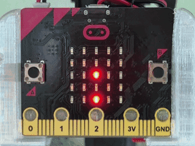
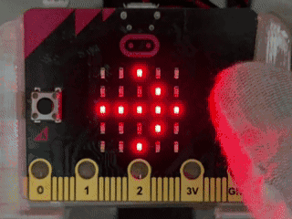
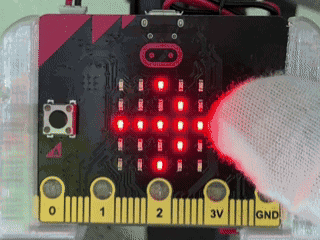
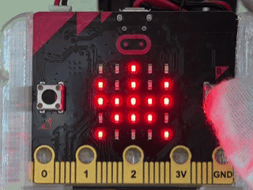
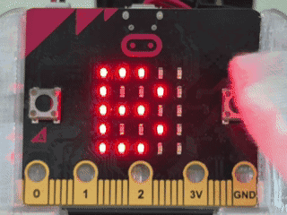
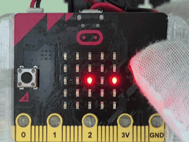
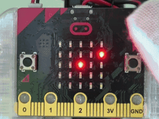

地球の公転モデル 地球の公転モデル
このプログラムでは、micro:bitを使って、中央の太陽のまわりを地球が回る様子をLEDで表す学習ができます。 このプログラムでは、micro:bitを使って、中央の太陽のまわりを地球が回る様子をLEDで表す学習ができます。
使い方
- 中央のLEDが太陽を表す 中央のLEDが太陽を表す
- 太陽のまわりにひょうじされるLEDが地球を表す 太陽のまわりに表示されるLEDが地球を表す
- 地球のLEDが1秒ごとにいちをかえながら太陽のまわりを回る 地球のLEDが1秒ごとに位置を変えながら太陽のまわりを回る
- 地球のいちが12回かわると、地球が太陽のまわりを1しゅうしたことを表す 地球の位置が12回変わると、地球が太陽のまわりを1周したことを表す
- 1つのいちを1か月として見ると、12か月で1年になる 1つの位置を1か月として見ると、12か月で1年になる
- LEDのいちを見ながら、地球の公転の動きをかんさつする LEDの位置を見ながら、地球の公転の動きを観察する

ねらい
- 地球が太陽のまわりを回る公転のイメージを作る 地球が太陽のまわりを回る公転のイメージを作る
- 12か月と1年のつながりをLEDの動きでたしかめる 12か月と1年のつながりをLEDの動きで確かめる
- 角度を少しずつかえながらいちを計算するプログラムのしくみをりかいする 角度を少しずつ変えながら位置を計算するプログラムの仕組みを理解する
チャレンジ
- 地球が動く速さをかえて見やすさを調整する 地球が動く速さを変えて見やすさを調整する
- 月の動きもついかして、太陽、地球、月のモデルにかいぞうする 月の動きも追加して、太陽、地球、月のモデルに改造する
- 地球のいちときせつの関係を考え、春夏秋冬のひょうげんにはってんさせる 地球の位置と季節の関係を考え、春夏秋冬の表現に発展させる
ホタルキャッチ ホタルキャッチ
このプログラムでは、micro:bitを使って、夏の夜にホタルを集めるように、AボタンとBボタンで光をキャッチし、暗い虫をよけながらとくてんをねらうゲームができます。 このプログラムでは、micro:bitを使って、夏の夜にホタルを集めるように、AボタンとBボタンで光をキャッチし、暗い虫をよけながら得点をねらうゲームができます。
使い方
- さいしょにBと右向きやじるしがこうごにひょうじされる 最初にBと右向き矢印が交互に表示される
- Bボタンでゲームの開始 Bボタンでゲームの開始
- Aボタンで下の点を左へ動かし、Bボタンで下の点を右へ動かす Aボタンで下の点を左へ動かし、Bボタンで下の点を右へ動かす
- 画面右上の3つのLEDがライフを表す 画面右上の3つのLEDがライフを表す
- 上から落ちてくる明るい点を下の点で受け止めると1点ついか 上から落ちてくる明るい点を下の点で受け止めると1点追加
- 上から落ちてくる暗い点を受け止めるとライフが1つへる 上から落ちてくる暗い点を受け止めるとライフが1つ減る
- 暗い点に当たってもばつじるしは出ず、ライフだけがへってゲームぞっこう 暗い点に当たってもばつ印は出ず、ライフだけが減ってゲーム続行
- とくてんがふえるほど、落ちてくる速さが少しずつ速くなる 得点が増えるほど、落ちてくる速さが少しずつ速くなる
- ライフがなくなるとゲームしゅうりょう ライフがなくなるとゲーム終了
- さいごにとくてんとけっかのひょうじょうをひょうじ 最後に得点と結果の表情を表示
- 3秒後にさいしょのひょうじへもどる 3秒後に最初の表示へ戻る

ねらい
- AボタンとBボタンで左右に動かすそうさをたいけんする AボタンとBボタンで左右に動かす操作を体験する
- 明るい点を集め、暗い点をよけるはんだん力をつける 明るい点を集め、暗い点をよける判断力をつける
- とくてん、ライフ、速さをいしきしたゲームせっけいの学習 得点、ライフ、速さを意識したゲーム設計の学習
チャレンジ
- 暗い点の出るわりあいをさらにふやす上級ルール 暗い点の出る割合をさらに増やす上級ルール
- ライフの数をふやしたりへらしたりして、むずかしさを調整する ライフの数を増やしたり減らしたりして、難しさを調整する
- とくてんごとのひょうじょうやランキングひょうじのついか 得点ごとの表情やランキング表示の追加
カブクワすもう3本勝負 カブクワ相撲3本勝負
このプログラムでは、micro:bitを使って、カブトムシとクワガタがおし合うように、AボタンとBボタンで3本先取の勝負を楽しめます。 このプログラムでは、micro:bitを使って、カブトムシとクワガタが押し合うように、AボタンとBボタンで3本先取の勝負を楽しめます。
使い方
- さいしょにBと右向きやじるしがこうごにひょうじされる 最初にBと右向き矢印が交互に表示される
- Bボタンでゲームの開始 Bボタンでゲームの開始
- ゲーム開始時は中央のLEDのみひょうじされる ゲーム開始時は中央のLEDのみ表示される
- Aボタンでカブトムシがおし、LEDが右へ動く Aボタンでカブトムシが押し、LEDが右へ動く
- Bボタンでクワガタがおし、LEDが左へ動く Bボタンでクワガタが押し、LEDが左へ動く
- LEDが右はしまで動くとカブトムシの1本勝ち LEDが右端まで動くとカブトムシの1本勝ち
- LEDが左はしまで動くとクワガタの1本勝ち LEDが左端まで動くとクワガタの1本勝ち
- 1本勝つたびに、勝った虫のとくてんがLEDで下から１つずつつみ上がってひょうじされる 1本勝つたびに、勝った虫の得点がLEDで下から１つずつ積み上がって表示される
- 1本勝負がついたら、LEDが一度中央へもどる 1本勝負がついたら、LEDが一度中央へ戻る
- みぎがわのLED3つがカブトムシ、ひだりがわのLED3つがクワガタの勝ち数のひょうじ 右側のLED3つがカブトムシ、左側のLED3つがクワガタの勝ち数の表示
- 先に3本取った虫の勝ちになり、勝った虫の絵とニコニコ顔がひょうじされる 先に3本取った虫の勝ちになり、勝った虫の絵とニコニコ顔が表示される
- 3秒後にさいしょのひょうじへもどる 3秒後に最初の表示へ戻る

ねらい
- AボタンとBボタンを使った2人たいせんのたいけん AボタンとBボタンを使った2人対戦の体験
- 3本先取の勝ち数をLEDのつみ上がりでりかいする 3本先取の勝ち数をLEDの積み上がりで理解する
- 1本ごとに中央から始まる勝負の流れをりかいする 1本ごとに中央から始まる勝負の流れを理解する
チャレンジ
- 5本先取にルールをかえる 5本先取にルールを変える
- おすたびに動くマスの数をランダムにする 押すたびに動くマスの数をランダムにする
- 虫のドット絵を自分でデザインしてみる 虫のドット絵を自分でデザインしてみる
カブクワこん虫ひょうほん カブクワ昆虫標本
このプログラムでは、micro:bitを使って、カブトムシ、クワガタ、チョウの形をボタンで切りかえながら、こんちゅうひょうほんのように楽しむことができます。 このプログラムでは、micro:bitを使って、カブトムシ、クワガタ、チョウの形をボタンで切り替えながら、昆虫標本のように楽しむことができます。
使い方
- さいしょにカブトムシの形をLEDでひょうじ 最初にカブトムシの形をLEDで表示
- Aボタンで次のこんちゅうへ進む Aボタンで次の昆虫へ進む
- Bボタンで前のこんちゅうへもどる Bボタンで前の昆虫へ戻る
- ひょうじされるこんちゅうは、カブトムシ、クワガタ、チョウの3しゅるい 表示される昆虫は、カブトムシ、クワガタ、チョウの3種類
- チョウのときにAボタンをおすと、カブトムシへもどる チョウのときにAボタンを押すと、カブトムシへ戻る
- カブトムシのときにBボタンをおすと、チョウへもどる カブトムシのときにBボタンを押すと、チョウへ戻る
- 気に入ったこんちゅうの形を見ながら、ひょうほんカードづくりをしてみよう 気に入った昆虫の形を見ながら、標本カードづくりをしてみよう

ねらい
- こんちゅうの形のちがいをLEDで表すほうほうを学ぶ 昆虫の形のちがいをLEDで表す方法を学ぶ
- ボタンそうさでひょうじをじゅんばんに切りかえるしくみをりかいする ボタン操作で表示を順番に切り替えるしくみを理解する
- 夏のこんちゅうかんさつやひょうほんづくりの活動につなげる 夏の昆虫観察や標本づくりの活動につなげる
チャレンジ
- トンボやバッタなど新しいこんちゅうをついかしてみる トンボやバッタなど新しい昆虫を追加してみる
- こんちゅうの名前をひょうじするくふう 昆虫の名前を表示する工夫
- ずかんを見ながらLEDの形を作りかえてみる 図鑑を見ながらLEDの形を作り変えてみる
花火うちあげチャレンジ 花火うちあげチャレンジ
このプログラムでは、micro:bitを使って、花火大会をイメージしながら、AボタンとBボタンで打ち上げ場所を動かし、A+Bボタンで花火を打ち上げるゲームを楽しむことができます。 このプログラムでは、micro:bitを使って、花火大会をイメージしながら、AボタンとBボタンで打ち上げ場所を動かし、A+Bボタンで花火を打ち上げるゲームを楽しむことができます。
使い方
- さいしょにBと右向きやじるしがこうごにひょうじされる 最初にBと右向き矢印が交互に表示される
- Bボタンでゲームの開始 Bボタンでゲームの開始
- 画面上のくらいLEDが花火を打ち上げたいもくひょうのいち、画面下の明るいLEDが打ち上げ場所を表す 画面上の暗いLEDが花火を打ち上げたい目標の位置、画面下の明るいLEDが打ち上げ場所を表す
- Aボタンで打ち上げ場所を左へ動かし、Bボタンで右へ動かす Aボタンで打ち上げ場所を左へ動かし、Bボタンで右へ動かす
- 左はしや右はしをこえると、反対がわへいどうする 左端や右端を越えると、反対側へ移動する
- もくひょうの真下に打ち上げ場所を合わせたら、A+Bボタンの同時おしで花火を打ち上げる 目標の真下に打ち上げ場所を合わせたら、A+Bボタンの同時押しで花火を打ち上げる
- もくひょうと同じ列に打ち上がると、大きな花火がひょうじされてとくてんがついかされる 目標と同じ列に打ち上がると、大きな花火が表示されて得点が追加される
- もくひょうとずれた列に打ち上がると、小さな花火がひょうじされる 目標とずれた列に打ち上がると、小さな花火が表示される
- 花火は全部で5発打ち上げる 花火は全部で5発打ち上げる
- 5発終わると、とくてんとけっかのひょうじょうがひょうじされる 5発終わると、得点と結果の表情が表示される
- けっかを3秒ひょうじしたあと、さいしょのひょうじへもどる 結果を3秒表示したあと、最初の表示へ戻る

ねらい
- 左右のいちを見てねらいを合わせる 左右の位置を見てねらいを合わせる
- もくひょうと打ち上げ場所のいちかんけいを考える 目標と打ち上げ場所の位置関係を考える
- 夏の行事をテーマにしたゲーム作りの学習 夏の行事をテーマにしたゲーム作りの学習
チャレンジ
- 打ち上げられる花火の数をかえてみる 打ち上げられる花火の数を変えてみる
- せいこうしたときの花火の形を自分でデザインする 成功したときの花火の形を自分でデザインする
- もくひょうのいちを見せる時間を短くしてルールをむずかしくする 目標の位置を見せる時間を短くしてルールを難しくする
時計がた公転月チェッカー 時計型公転月チェッカー
このプログラムでは、micro:bitを使って、時計のような配置で太陽のまわりを地球が回る公転モデルを見ながら、今の月をかくにんする学習ができます。 このプログラムでは、micro:bitを使って、時計のような配置で太陽のまわりを地球が回る公転モデルを見ながら、今の月を確認する学習ができます。
使い方
- 中央のLEDが太陽、まわりを動くLEDが地球を表す 中央のLEDが太陽、まわりを動くLEDが地球を表す
- 地球のいちは時計のようなならびで、真上が12月、真下が6月を表す 地球の位置は時計のような並びで、真上が12月、真下が6月を表す
- 地球のLEDが1秒ごとに次の月のいちへ動く 地球のLEDが1秒ごとに次の月の位置へ動く
- 12回いちがかわると、地球が太陽のまわりを1しゅうしたことを表す 12回位置が変わると、地球が太陽のまわりを1周したことを表す
- Aボタンで地球の動きを一時ていしし、もう一度Aボタンでさいかいする Aボタンで地球の動きを一時停止し、もう一度Aボタンで再開する
- Bボタンでげんざいの月が「1ガツ」「2ガツ」のように数字とカタカナのドット絵でひょうじされる Bボタンで現在の月が「1ガツ」「2ガツ」のように数字とカタカナのドット絵で表示される
- 月のひょうじが終わると、公転モデルの画面へもどる 月の表示が終わると、公転モデルの画面へ戻る

ねらい
- 地球が太陽のまわりを回る公転のイメージをつかむ 地球が太陽のまわりを回る公転のイメージをつかむ
- 時計のいちと12か月をむすびつけて考える 時計の位置と12か月を結びつけて考える
- 一時ていしきのうを使ってモデルをかんさつする 一時停止機能を使ってモデルを観察する
チャレンジ
- 地球が動く速さをかえてかんさつしやすくする 地球が動く速さを変えて観察しやすくする
- 真上を1月にするなど、月の配置をかえてみる 真上を1月にするなど、月の配置を変えてみる
- 地球のいちときせつやせいざのかんけいを調べてみる 地球の位置と季節や星座の関係を調べてみる
時計がた公転きせつチェッカー 時計型公転季節チェッカー
このプログラムでは、micro:bitを使って、時計のような配置で太陽のまわりを地球が回る公転モデルを見ながら、きせつの目安をかくにんする学習ができます。 このプログラムでは、micro:bitを使って、時計のような配置で太陽のまわりを地球が回る公転モデルを見ながら、季節の目安を確認する学習ができます。
使い方
- 中央のLEDが太陽、まわりを動くLEDが地球を表す 中央のLEDが太陽、まわりを動くLEDが地球を表す
- 地球のいちは時計のようなならびで、真上が12月、真下が6月を表す 地球の位置は時計のような並びで、真上が12月、真下が6月を表す
- 地球のLEDが1秒ごとに次の月のいちへ動く 地球のLEDが1秒ごとに次の月の位置へ動く
- 12回いちがかわると、地球が太陽のまわりを1しゅうしたことを表す 12回位置が変わると、地球が太陽のまわりを1周したことを表す
- Aボタンで地球の動きを一時ていしし、もう一度Aボタンでさいかいする Aボタンで地球の動きを一時停止し、もう一度Aボタンで再開する
- Bボタンをおすとげんざいの月に合ったきせつがカタカナのドット絵で表示される Bボタンを押すと現在の月に合った季節がカタカナのドット絵で表示される
- 3月から5月は「ハル」、6月から8月は「ナツ」、9月から11月は「アキ」、12月から2月は「フユ」をひょうじ 3月から5月は「ハル」、6月から8月は「ナツ」、9月から11月は「アキ」、12月から2月は「フユ」を表示
- きせつのひょうじが終わると、公転モデルの画面へもどる 季節の表示が終わると、公転モデルの画面へ戻る

ねらい
- 地球が太陽のまわりを回る公転のイメージをつかむ 地球が太陽のまわりを回る公転のイメージをつかむ
- 12か月ときせつのつながりをLEDの動きを見ながら考える 12か月と季節のつながりをLEDの動きを見ながら考える
- 一時ていしきのうを使ってモデルかんさつし、きせつとのかんけいをかくにんする 一時停止機能を使ってモデルを観察し、季節との関係を確認する
チャレンジ
- 地球が動く速さをかえてかんさつしやすくする 地球が動く速さを変えて観察しやすくする
- きせつの分け方を調べて、どの月がどのきせつに入るか話し合う 季節の分け方を調べて、どの月がどの季節に入るか話し合う
- 地球のいちときせつやせいざのかんけいをしらべてみる 地球の位置と季節や星座の関係を調べてみる
本情報の内容 (添付文書、リンク先などを含む) は、 作成日時点でのものであり、 予告なく変更される場合があります。